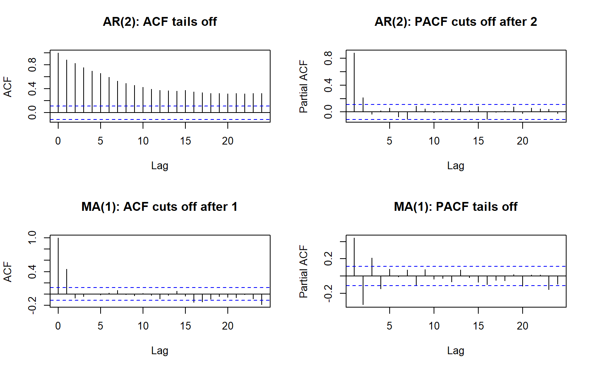
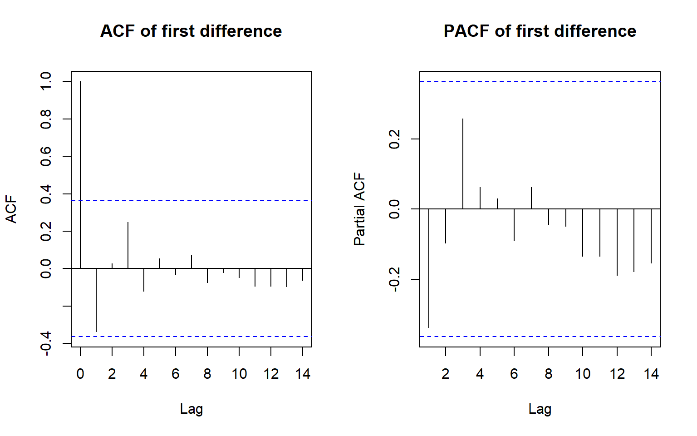
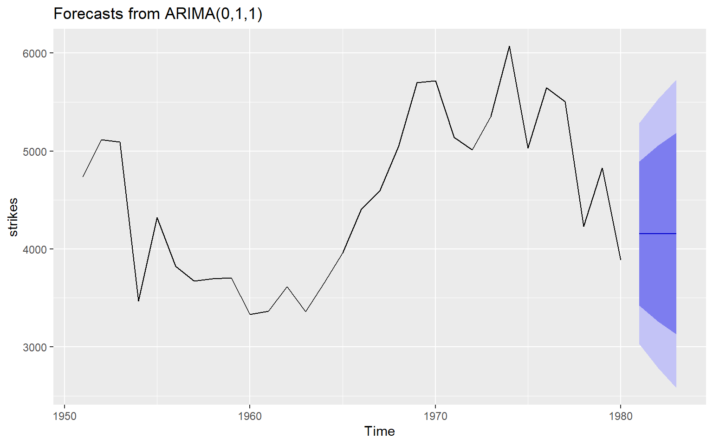

This section covers Part 1 - ARIMA models. The main ideas in ARIMA are as follows,
MA(q):\(y_t = \varepsilon_t + \theta_1 \varepsilon_{t-1} + \dots + \theta_q \varepsilon_{t-q}\). Always stationary. ACF cuts off after lag q.
AR(p):\(y_t = \phi_1 y_{t-1} + \dots + \phi_p y_{t-p} + \varepsilon_t\). Stationary if the roots of \(\phi(B)\) lie outside the unit circle (AR(1): \(|\phi| < 1\)). PACF cuts off after lag p.
ARMA(p, q): both ACF and PACF tail off.
ARIMA(p, d, q): ARMA on the d-times differenced series.
SARIMA(p,d,q)(P,D,Q)\(_m\): adds seasonal AR/MA terms at lags m, 2m, … and D seasonal differences. Read the seasonal part from the ACF/PACF at lags m, 2m, 3m.
Box-Jenkins: (1) plot, transform and difference until stationary; (2) pick p, q, P, Q from the ACF/PACF; (3) estimate (maximum likelihood); (4) check that the residuals are white noise; (5) forecast.
Only compare AIC between models with the same differencing, because differencing changes the data the likelihood is computed on.
Prediction intervals get wider with the horizon. For a model with differencing they keep growing.
2.2 Worked Examples
This section shows how to identify AR and MA orders from the ACF and PACF, fits an AR(1) by hand and checks it against R, then builds and tests a seasonal ARIMA model for the air passenger data, and finally compares its forecasts with a seasonal naive benchmark.
2.2.1 Identification: what the ACF and PACF look like
Code
library(forecast)library(readr)library(here)library(dplyr)set.seed(10)ar2 <-arima.sim(list(ar =c(0.6, 0.3)), n =300)ma1 <-arima.sim(list(ma =0.7), n =300)par(mfrow =c(2, 2))acf(ar2, main ="AR(2): ACF tails off")pacf(ar2, main ="AR(2): PACF cuts off after 2")acf(ma1, main ="MA(1): ACF cuts off after 1")pacf(ma1, main ="MA(1): PACF tails off")

Code
par(mfrow =c(1, 1))
2.2.2 From first principles: fitting an AR(1)
Fit an AR(1) with mean \(\mu\) by minimising the conditional sum of squares:
Ljung-Box test
data: Residuals from ARIMA(0,1,1)(0,1,1)[12]
Q* = 20.34, df = 22, p-value = 0.5618
Model df: 2. Total lags used: 24
Residuals should look like white noise: no big ACF spikes, Ljung-Box p-value not small, roughly normal histogram.
2.2.5 Forecast and test set comparison
Code
h <-length(test)fc1 <-forecast(fit1, h = h)fc2 <-forecast(fit2, h = h)fc_sn <-snaive(train, h = h)plot(fc1, xlim =c(1955, 1961))lines(test, col ="red")
# Sliding window: fixed 60-day training window, 1 day aheadcv_slide <-tsCV(y_all, f_snaive, h =1, window =60)rbind(Expanding =sqrt(mean(cv[, 1]^2, na.rm =TRUE)),Sliding =sqrt(mean(cv_slide^2, na.rm =TRUE)))
[,1]
Expanding 15.75857
Sliding 15.98040
The results show that the expanding window does slightly better than the sliding window for this store, but the gap is small.
2.2.7 The lag operator
Code
y <-c(3, 7, 4, 8, 5)c(NA, y[1:(length(y)-1)]) # lag by hand
[1] NA 3 7 4 8
Code
#> [1] NA 3 7 4 8dplyr::lag(y, n =1) # same shift
[1] NA 3 7 4 8
Code
#> [1] NA 3 7 4 8dplyr::lead(y, n =1) # lead
[1] 7 4 8 5 NA
Code
#> [1] 7 4 8 5 NA
2.2.8 Key concepts
Reading p and q from the ACF and PACF. An AR(\(p\)) process has a PACF that cuts off after lag \(p\), while its ACF tails off. An MA(\(q\)) process has an ACF that cuts off after lag \(q\), while its PACF tails off. ARMA(\(p, q\)) has both tailing off. For seasonal orders, read \(P\) and \(Q\) from the same plots at lags \(m, 2m, 3m, \dots\). For monthly data, \(m = 12\), so a spike at lag 12 suggests a seasonal MA(1), \(Q = 1\).
Why take logs before differencing. The air passenger series has variance that grows with the level, so the log makes the variance roughly constant and turns multiplicative seasonality into additive. Differencing the log series, \(\nabla \log y_t = \log y_t - \log y_{t-1}\), gives approximately the percentage change in \(y_t\). lambda = 0 in Arima() fits on the log scale and back-transforms the forecasts.
Stationarity (AR) and invertibility (MA). An AR model is stationary when the roots of \(\phi(z) = 0\) lie outside the unit circle; for AR(1) this means \(|\phi| < 1\). An MA model is invertible when the roots of \(\theta(z) = 0\) lie outside the unit circle, so it can be rewritten as an infinite autoregression. Without invertibility, two different parameter values give the same ACF, so the estimates are not uniquely identified.
Why forecast intervals grow with \(h\). Future shocks \(\varepsilon_{t+j}\) are unknown, and each step adds another shock to the forecast error, so the forecast variance accumulates with the horizon \(h\). With differencing, the variance keeps growing rather than settling, since the level has a unit root. The intervals therefore widen roughly with \(\sqrt{h}\).
Why AIC can’t compare models with different \(d\). AIC compares likelihoods only when the models are fitted to the same data. Differencing once fits to \(n - 1\) values and differencing twice fits to \(n - 2\), so the likelihoods refer to different datasets. Choose \(d\) from plots and unit-root tests first, then use AIC to choose \(p\) and \(q\) within that \(d\). The same applies to the seasonal \(D\).
2.3 Worked tutorial: Exercise 1 (2025)
Code
library(forecast)## Question 7: US strikes, ARIMA(0,1,1)strikes <-ts(c(4737, 5117, 5091, 3468, 4320, 3825, 3673, 3694, 3708, 3333,3367, 3614, 3362, 3655, 3963, 4405, 4595, 5045, 5700, 5716,5138, 5010, 5353, 6074, 5031, 5648, 5506, 4230, 4827, 3885),start =1951)# 7a: graphs that support d = 1par(mfrow =c(1, 2))acf(diff(strikes), main ="ACF of first difference")pacf(diff(strikes), main ="PACF of first difference")

Code
par(mfrow =c(1, 1))# 7b-c: fit and check residualsfit7 <-Arima(strikes, order =c(0, 1, 1))fit7
Ljung-Box test
data: Residuals from ARIMA(0,1,1)
Q* = 2.4792, df = 5, p-value = 0.7796
Model df: 1. Total lags used: 6
Code
# 7d: R forecasts to check the hand calculationforecast(fit7, h =3)
Point Forecast Lo 80 Hi 80 Lo 95 Hi 95
1981 4157.329 3420.224 4894.435 3030.024 5284.635
1982 4157.329 3261.525 5053.134 2787.314 5527.345
1983 4157.329 3126.986 5187.673 2581.555 5733.104
Code
# Hand forecast for ARIMA(0,1,1): yhat(T+1) = y_T + theta * e_T,# and later steps equal yhat(T+1) because future shocks are set to zerotheta7 <-coef(fit7)["ma1"]e_T <-tail(residuals(fit7), 1)y_T <-tail(strikes, 1)yhat1 <- y_T + theta7 * e_Tc(h1 = yhat1, h2 = yhat1, h3 = yhat1)
h1.y_T h2.y_T h3.y_T
4157.329 4157.329 4157.329
Code
# 7e: plot with prediction intervalsautoplot(forecast(fit7, h =3))

Code
## Question 8: coal production, AR(4)-type model by handc8 <-146.1phi8 <-c(0.891, -0.257, 0.392, -0.333)# Last four observed values, most recent last: 1965 to 1968y8 <-c(512, 534, 552, 545)# Recursive forecasts for 1969 to 1971# Each new forecast is fed back in as an input for the next onefor (h in1:3) { n <-length(y8) new <- c8 +sum(phi8 *rev(y8[(n -3):n])) y8 <-c(y8, new)}round(tail(y8, 3), 1) # forecasts for 1969, 1970, 1971
[1] 528.7 515.6 499.5
Question 7 (US strikes). The first difference of the series has an ACF that cuts off after lag 1, which points to an MA(1) term once the series has been differenced once. The model can be written with the backshift operator as \((1 - B)y_t = (1 + \theta B)\varepsilon_t\), or equivalently \(y_t - y_{t-1} = \varepsilon_t + \theta\varepsilon_{t-1}\). Fitting it in R gives \(\hat\theta = -0.31\), which lies inside the unit circle so the model is invertible, and a Ljung-Box p-value of 0.78, so the residuals look like white noise and the model is satisfactory. The hand forecast of \(y_T + \hat\theta e_T = 4157.3\) matches R for all three years ahead, because the forecast is flat once future shocks are set to zero. The 95% prediction intervals widen across the horizon, from roughly 3030 to 5285 for the first year to roughly 2582 to 5733 for the third.
Question 8 (coal production). The model \(Y_t = c + \phi_1 Y_{t-1} + \phi_2 Y_{t-2} + \phi_3 Y_{t-3} + \phi_4 Y_{t-4} + e_t\) is an AR(4) model, so \(p = 4\), \(d = 0\) and \(q = 0\). It was chosen because it uses four lagged values of the series itself, with no differencing or moving-average terms. Using \(c = 146.1\) and the estimated coefficients, the forecasts are 528.7 for 1969, 515.6 for 1970 and 499.5 for 1971. The first forecast checks by hand as \(146.1 + 0.891(545) - 0.257(552) + 0.392(534) - 0.333(512) \approx 528.6\), with the small difference from rounding. Each later forecast uses the previous forecasts as inputs.
2.4 Reflection
It was really nice getting into some actual modelling. The theory made sense with plots illustrating things, but it made much more sense after coding it. My main confusion still lies around cross validation. I understand why it has to be different for Time Series data, but I the three methods are confusing. Walk-Forward and Expanding seem to be the same thing. Other theoretical concepts make sense when learning about them, like the different kinds of stationarity, but I often get mixed up when trying to remember what qualities align with which type.
The MA(q) and AR(p) formulas are really confusing to wrap my head around. Their recursive nature makes it so hard to visualise, that each prediction can be based on all past observations. Also it took me a long time to realise exactly what we are doing when we choose our models. I didn’t get why we want to transform our data to be white noise in the ACF plots, it seemed to defeat the points of modelling. I am still used to drawing a nice Linear Regression straight line through the data. I now understand, the modelling until residuals resemble white noise indicates we have modelled the pattern of the data as much as possible, and any further model complexitiy would overfit to noise in the data.
The adding of additional components, differencing and seasonality, were easy to understand, as by this stage I have resolved my confusions regarding ARMA models. In exercise 1 question 7b, it was so satisfying seeing the forecast plot of my full ARIMA model.
Overall, this was an extremely frustrating section, because my incorrect preconceptions and misunderstandings about where we were going with our modelling made understanding the modelling process very difficult. I felt like I thought I knew what was going on, but it never matched the results, until things clicked, and then everything fell into place. I also really enjoyed doing one of my projects on this section where I got to dive a lot deeper and get more practice (see {#sec-p1}).